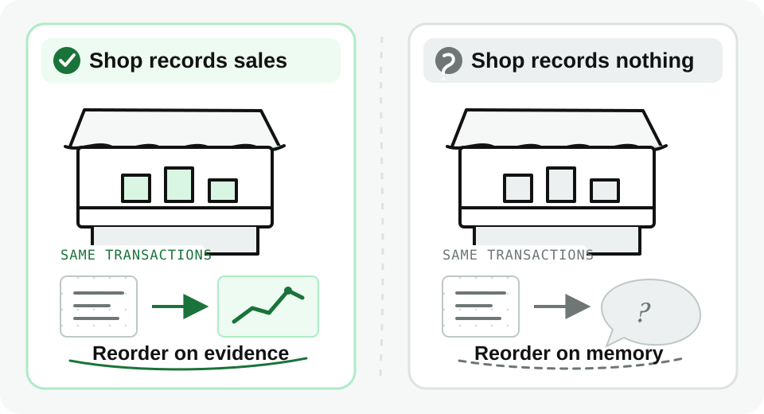
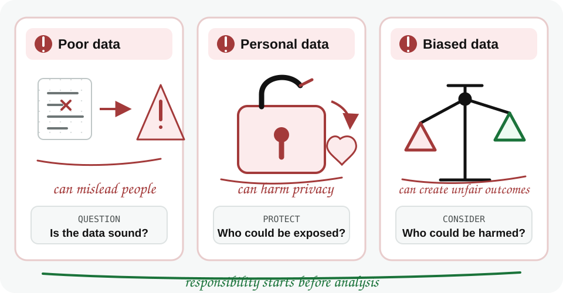

Two shop owners sell the same products at the same prices. One records every sale, the other records nothing. After a year, only one of them knows which product earns the most and which has been sitting unsold since March.
Data is not just numbers in a spreadsheet. It shapes decisions in business, healthcare, education, government, and everyday life.
Instead of relying only on guesswork or intuition, organizations use data to:
For example, a neighborhood shop can track which products sell fastest, when stock runs low, and which items earn the most profit, then reorder on the evidence.
An online store uses the same approach at larger scale to find which marketing campaigns work and where customers abandon their carts.
An organization that works this way is often described as data-driven.
Companies that use data effectively can respond faster and make smarter choices than those that do not.
Two shops on the same street sell the same goods at the same prices. One knows which items earn most per shelf and reorders on that; the other reorders on memory. Neither has better data than the other. The transactions happened either way.
Without data, you are just another person with an opinion.

You do not have to become a data scientist to benefit from understanding data. Data skills help in many roles:
None of these people are data professionals. All of them are better at their own job for being able to read a number and ask where it came from.
Poor data can mislead people.
Mishandled personal data can harm privacy.
Biased data can lead to unfair outcomes.
Responsibility begins before any analysis: question the data, protect personal information, and consider who could be harmed by the result.
